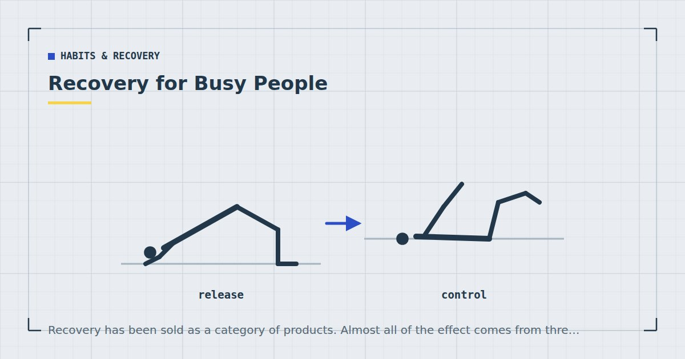

Habits & Recovery
Recovery for Busy People: Sleep, Soreness and Rest Days
Recovery has been sold as a category of products. Almost all of the effect comes from three unglamorous things, and none of them are for sale.

Recovery is the part of training people either ignore entirely or spend a great deal of money on, and both responses miss the same point: the interventions that matter most are free, dull, and mostly consist of things you already know you should be doing.
This ranks them honestly, including being clear about which popular ones do very little.
What recovery actually is
Training provides a stimulus and temporarily makes you worse — more fatigued, weaker, with some tissue damage. Adaptation happens afterwards, during recovery. The session is the request; recovery is where the request is granted.
Two consequences follow. Training more is not automatically better, because past a certain point you are accumulating requests faster than they can be granted. And "recovery" is not one thing — it spans hours (fuel and fluid), days (tissue repair and fatigue clearance) and weeks (connective tissue adaptation).
For someone training two or three times a week at home, the days-scale is what matters most.
The interventions, ranked by evidence
| Intervention | Evidence | Effort |
|---|---|---|
| Adequate sleep | Strong | High, in practice |
| Adequate protein and energy | Strong | Moderate |
| Sensible training load | Strong | Free |
| Light movement on rest days | Moderate | Low |
| Massage | Moderate, modest effect | Cost |
| Heat and cold | Moderate, modest effect | Low |
| Foam rolling | Weak to moderate, small | Low |
| Stretching for soreness | Does not work | — |
| Most supplements | Weak | Cost |
Note the shape: the top three are free and unexciting, and everything purchasable sits in the lower half.
1. Sleep
The intervention with the best evidence and the one people are least willing to prioritise.
A systematic review of sleep interventions for athletic performance and recovery found that sleep extension in underslept people tends to improve performance measures, and restriction tends to degrade them.1 The effect is dose-dependent and it affects nearly everything: strength endurance, perceived exertion, coordination, appetite and the willingness to train at all.
The practical points that matter most: a consistent wake time including weekends, daylight within an hour of waking, a cool dark room, and limiting caffeine after early afternoon given its five-to-six-hour half-life.
And the trade worth avoiding: getting up an hour earlier to train at the cost of an hour's sleep, when you are already short. That removes recovery to add stimulus, which is the wrong direction. The full picture is in sleep and strength.
2. Food, particularly protein
Meta-analytic evidence shows protein intake supports muscle mass gains alongside resistance training,2 with the benefit plateauing in the region of 1.6 g per kilogram of bodyweight per day. A later review reached broadly consistent conclusions.3
Roughly 1.4 to 1.6 g/kg daily is the working range for someone training to build or maintain muscle. Most people fall short at breakfast specifically, and fixing that one meal moves them into range — the numbers are in how much protein you need and the meals in high-protein meals you can make in 15 minutes.
Total energy intake matters too, and in a direction people find inconvenient: recovery capacity is reduced in a calorie deficit. That is not a reason not to lose weight; it is a reason to reduce training volume slightly while doing so, which is the approach in the realistic weight-loss plan.
Timing around sessions matters considerably less than total daily intake, and the narrow anabolic window has not held up well — see what to eat before and after a workout.
3. Rest days and training load
Free, and the one most people get wrong in both directions.
Adaptation happens between sessions, so a plan with no genuine recovery produces steadily worsening sessions. Two or three sessions a week with a day between them is the structure that suits most home trainees — the reasoning is in how many days a week should you work out.
What belongs on a rest day: walking, which contributes to the aerobic half of adult activity guidance that strength training does not cover,4 and light mobility work. What does not: hard conditioning, which competes for the same recovery capacity and quietly turns a three-day plan into a five-day one.
The other half of load management is not taking every set to absolute failure. Evidence comparing sets taken to failure with sets stopped short suggests you can stop a few repetitions early without sacrificing much adaptation, while saving considerable recovery.5 For a busy person that is an unusually good trade — nearly the same result for meaningfully less cost.
When load has genuinely outrun recovery, a lighter week is the response, and the criteria are in deload weeks for home training.
Everything with strong evidence behind it is free. Everything you can buy sits in the bottom half of the table.
The modest ones
Real effects, small sizes. Worth doing if you enjoy them and not worth prioritising.
Massage has reasonable support for reducing perceived soreness, at modest effect sizes.6
Heat and cold. A meta-analysis of thirty-two randomised controlled trials found both reduced pain in people with delayed onset muscle soreness.7 Useful for comfort rather than transformative for adaptation.
Light movement on rest days. Walking makes sore legs feel better in the moment. It does not clearly accelerate recovery, and it makes the day more pleasant, which is a legitimate benefit.
The ones that do very little
Stretching for soreness. A Cochrane review found stretching before or after exercise does not produce clinically important reductions in muscle soreness.8 This is one of the firmer negative findings in the area and it contradicts extremely widespread advice. Stretch for range of motion or because you enjoy it — see cool-down stretches.
Foam rolling has some support for short-term range of motion and perceived soreness, at small effect sizes, and the mechanistic claims made for it are weak — see foam rolling: what the evidence says.
Most recovery supplements. Weak evidence, real cost. Adequate protein is the nutritional intervention that matters and it comes from food.
The three timescales
Recovery gets discussed as one thing, and it operates on at least three clocks that need different responses.
Hours: fuel and fluid. Glycogen and hydration. For a thirty-minute home session this is close to a non-issue — you have ample stored fuel and normal drinking through the day covers the rest. It matters more in hot rooms and for anyone training first thing after a night without fluids.
Days: fatigue and tissue. Muscular fatigue clears over roughly 24 to 72 hours depending on how hard the session was, and this is the timescale rest days are for. It is also where sleep and protein do most of their work, and where the decision about whether to train today actually sits.
Weeks: connective tissue and accumulated load. Tendons, ligaments and the structures around joints adapt considerably more slowly than muscle. This is why progressing too quickly produces aching joints while the muscles feel fine, and why the sensible response to that particular signal is to hold a progression rather than push through it. It is also the timescale a deload operates on.
Most people manage the first and ignore the third. The third is where the injuries live, and it is the reason the progression ladders on this site have graduation criteria rather than a timetable — see bodyweight exercise progressions.
Four things that are not recovery
Doing a lighter version of the same training. An easy session is training, not recovery. It has a cost, smaller than a hard session but not zero, and a week of easy sessions is not a rest week. This matters for anyone whose instinct on a tired day is to do something rather than nothing — which is usually the right instinct, provided you are honest that it is still training.
Stretching. Covered above, and worth repeating because it is the single most commonly recommended recovery activity and it does not reduce soreness.8
Feeling recovered. Perception and readiness correlate loosely. People underslept for several nights frequently feel adapted to it while their performance measures say otherwise, and people who feel terrible on a given evening often train perfectly well. This is why the decision rule in working out when you're exhausted uses checkable facts rather than how you feel.
Rest without sleep. Sitting on the sofa is not the same intervention as sleeping. It is pleasant, and it is not what the evidence is about.
What a recovered week looks like
Concretely, for someone training three times a week around a job.
Three sessions with a day between each. On training days, working sets stopped one to three repetitions short of failure with only the last set of each exercise taken closer. On the days between, a walk of twenty to forty minutes and nothing else structured. Seven to nine hours of sleep with a consistent wake time. A protein source at every meal, with particular attention to breakfast.
That is the whole protocol. It contains no products, no ice baths, no supplements and no recovery sessions. It is also, in my experience, a week that almost nobody actually runs — because the components are individually boring and collectively unglamorous, and the market for them is nonexistent.
If you are training consistently, sleeping badly and wondering why your numbers have stalled, the answer is above and it is not the programme. Adult activity guidance describes an ongoing weekly pattern of activity,4 and sustaining that pattern for years depends far more on recovering adequately than on any individual session being optimal.
Soreness is not the measure
An important correction, because people use soreness as a recovery gauge and it is a poor one.
Soreness tracks novelty far more than it tracks training quality or recovery status. The same programme produces dramatic soreness in week one and almost none by week six, while the results improve across that period. A session that leaves you fine was not wasted, and one that leaves you wrecked was not necessarily good.
What soreness does usefully indicate: if it has not cleared by the next session of that type, when it previously did, your volume has likely outrun your recovery. That change is the signal, not the presence of soreness itself. The full account is in DOMS: why you're sore and what actually helps.
Signals that you are under-recovered
Watch for these together rather than individually, since any one has other explanations.
- Performance declining across two or more consecutive sessions at the same variation and tempo. The clearest signal, and the reason to keep a record — see tracking progress without a gym or scale.
- Soreness no longer clearing before the next session of that type.
- Joints aching rather than muscles. Connective tissue adapts more slowly than muscle, and this is its signal.
- Disturbed sleep during a heavy block.
- Dreading sessions you previously enjoyed. Softer, and it often precedes measurable decline.
The response is not more recovery products. It is less training for a week, per deload weeks for home training.
Recovery when you have no time
The honest version for anyone who cannot restructure their life around recovering.
You cannot buy your way out of insufficient sleep. No supplement, tool or protocol compensates. If sleep is genuinely constrained — a newborn, shift work, caring responsibilities — the correct response is to reduce training load rather than to add recovery interventions. Train appropriately for the recovery available: fewer sets, further from failure, no technical skill work, maintenance as a legitimate goal. That is covered for shift patterns in building a routine around shift work and for individual bad days in working out when you're exhausted.
Two sessions a week is a real training week. It meets the adult recommendation for muscle-strengthening activity,4 and it is recoverable from in circumstances where four is not. Reducing volume during a difficult period is a plan adjustment rather than a failure.
The single highest-return change for most busy people is one extra hour of sleep on three nights a week, and it is worth more than any addition to the training itself.
Where to start
In order, and stopping after the first two would capture most of the available benefit.
1. Fix the obvious sleep problems. Consistent wake time, daylight in the morning, caffeine cut-off in the early afternoon. Nothing exotic.
2. Fix breakfast. It is where almost everyone loses their daily protein target, and it costs two minutes.
3. Stop taking every set to absolute failure. One to three repetitions in reserve on working sets, closer on the last set of each exercise. Nearly the same adaptation for considerably less recovery cost.
4. Put a genuine rest day between sessions, and walk on it.
5. Ignore the rest until those four are in place. Massage, cold showers, rollers and supplements are all downstream of sleeping enough, eating enough protein and not training more than you can recover from.
None of that is interesting, and it is where the effect sizes are. The training you can recover from is the training that works.
Frequently asked questions
What matters most for workout recovery?
Sleep, adequate protein and energy intake, and a sensible training load. All three have strong evidence behind them and all three are free. Everything purchasable — massage, rollers, supplements — sits well below them in effect.
How many rest days do I need?
At least one between resistance sessions targeting the same muscle groups. Two or three sessions a week with a day between them suits most people training at home. Walking and light mobility work belong on rest days; hard conditioning does not.
Does soreness mean I have not recovered?
Not reliably. Soreness tracks novelty far more than recovery status — the same programme produces dramatic soreness in week one and almost none by week six while results improve. What matters is soreness no longer clearing before the next session when it previously did.
Do recovery products actually work?
Massage and heat or cold therapy have moderate evidence for modest reductions in perceived soreness. Foam rolling has weaker support with small effects. Stretching does not reduce soreness at all, and most recovery supplements have weak evidence and real cost.
How do I recover when I cannot get enough sleep?
Reduce the training load rather than adding recovery interventions. Fewer sets, further from failure, no technical skill work, and maintenance as a legitimate goal. You cannot buy your way out of insufficient sleep.
Should I train to failure on every set?
No. Evidence comparing sets taken to failure with sets stopped short suggests stopping a few repetitions early preserves most of the adaptation while saving considerable recovery. For a busy person that is an unusually good trade.
What are the signs I am under-recovered?
Performance declining across consecutive sessions at the same variation, soreness that no longer clears before the next session, joints aching rather than muscles, disturbed sleep during a heavy block, and dreading sessions you previously enjoyed. Watch for several together.
Sources and further reading
- Bonnar D, Bartel K, Kakoschke N, Lang C. “Sleep Interventions Designed to Improve Athletic Performance and Recovery: A Systematic Review of Current Approaches.” Sports Medicine, 2018;48(3):683–703. PubMed.
- Morton RW, Murphy KT, McKellar SR, et al. “A systematic review, meta-analysis and meta-regression of the effect of protein supplementation on resistance training-induced gains in muscle mass and strength in healthy adults.” British Journal of Sports Medicine, 2018;52(6):376–384. PubMed.
- Nunes EA, Colenso-Semple L, McKellar SR, et al. “Systematic review and meta-analysis of protein intake to support muscle mass and function in healthy adults.” Journal of Cachexia, Sarcopenia and Muscle, 2022;13(2):795–810. PubMed.
- World Health Organization. WHO Guidelines on Physical Activity and Sedentary Behaviour. 2020.
- Vieira AF, Umpierre D, Teodoro JL, et al. “Effects of Resistance Training Performed to Failure or Not to Failure on Muscle Strength, Hypertrophy, and Power Output: A Systematic Review With Meta-Analysis.” Journal of Strength and Conditioning Research, 2021. PubMed.
- Dupuy O, Douzi W, Theurot D, Bosquet L, Dugué B. “An Evidence-Based Approach for Choosing Post-exercise Recovery Techniques to Reduce Markers of Muscle Damage, Soreness, Fatigue, and Inflammation: A Systematic Review With Meta-Analysis.” Frontiers in Physiology, 2018;9:403. PubMed.
- Wang Y, Li S, Zhang Y, et al. “Heat and cold therapy reduce pain in patients with delayed onset muscle soreness: A systematic review and meta-analysis of 32 randomized controlled trials.” Physical Therapy in Sport, 2021;48:177–187. PubMed.
- Herbert RD, de Noronha M, Kamper SJ. “Stretching to prevent or reduce muscle soreness after exercise.” Cochrane Database of Systematic Reviews, 2011;(7):CD004577. PubMed.
Comments
Comments are not enabled yet. Add a hosted comment embed (Disqus, Commento, Giscus) inside this container when you are ready.